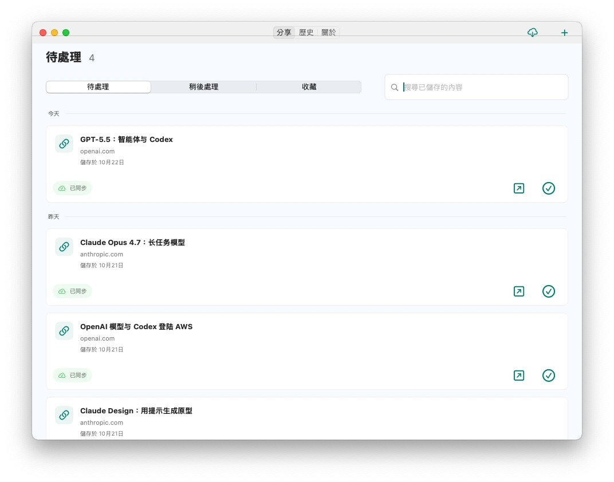
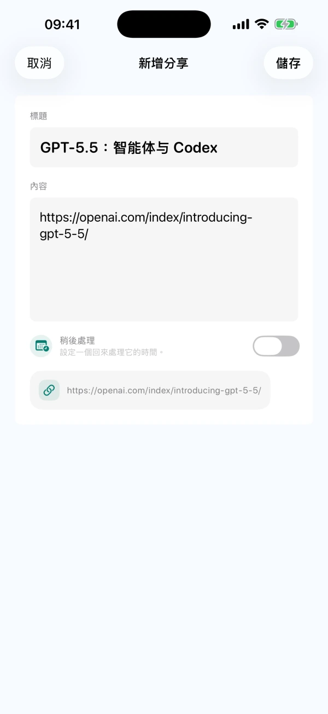
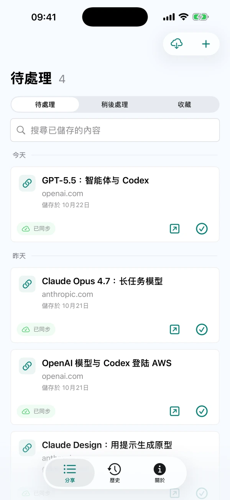

分享儲存，也能手動記錄
從支援系統分享的 App 儲存可分享的文字、連結或圖片，也可以在 CarryOver 中手動記錄想法。


iPhoneiPadMac
將連結、貼文和靈感分享到 CarryOver
未完成的內容持續留在待處理清單

打開來源，找到內容，一鍵完成
從支援系統分享的 App 儲存可分享的文字、連結或圖片，也可以在 CarryOver 中手動記錄想法。
未完成的內容不會因為儲存時間久而離開待處理清單。真正處理完，再標記完成。
在 iPhone、iPad 和 Mac 上依標題、文字和來源網址搜尋，待處理清單和歷史記錄都能查找。
完成的內容進入歷史記錄。需要繼續處理時，可以還原至待處理清單。
設定日期和時間，並允許系統通知。點選提醒即可開啟對應內容，繼續處理。
透過 iCloud 在登入同一 Apple 帳號的 iPhone、iPad 和 Mac 間同步。網路和 iCloud 狀態可能影響同步速度。
目前版本沒有每日儲存次數限制，也無需另購 Pro 升級。當地上架情況和價格以 App Store 為準。 閱讀幫助